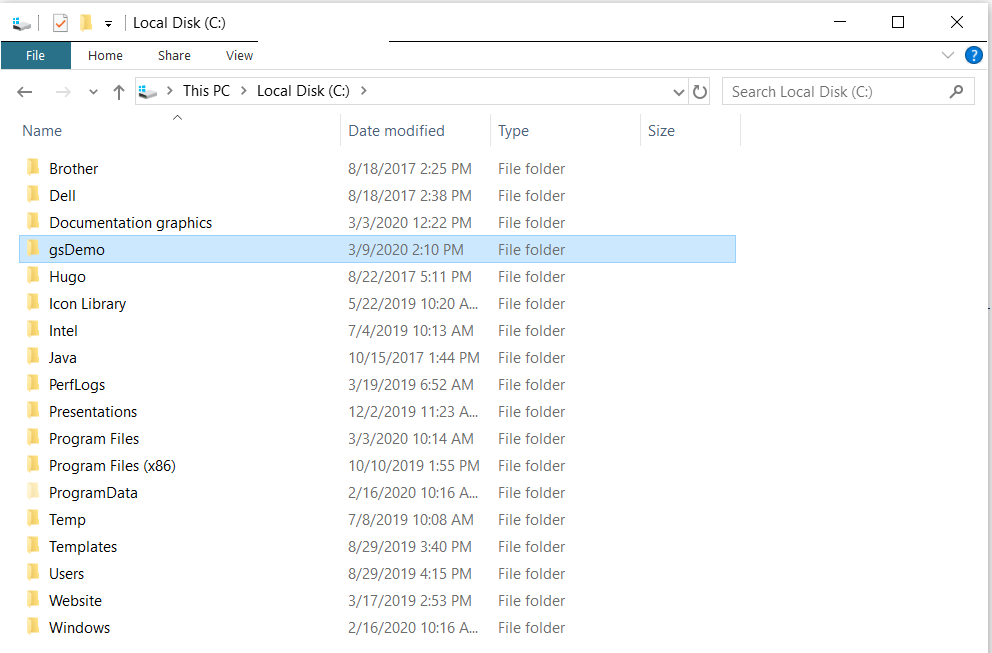
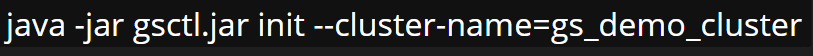
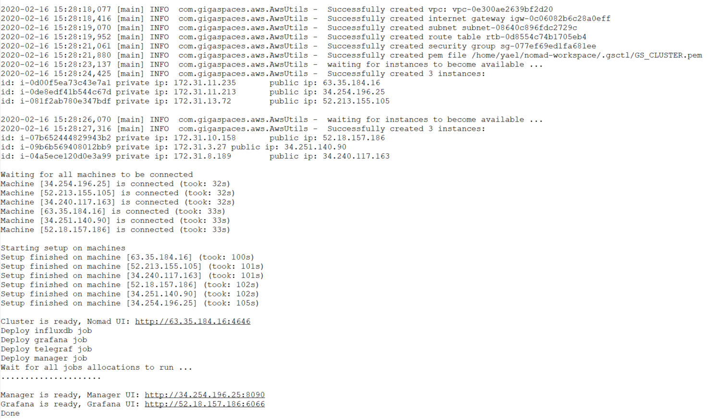
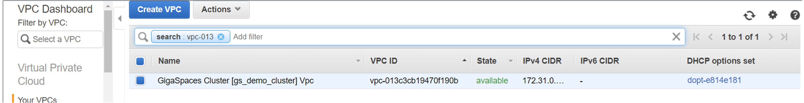
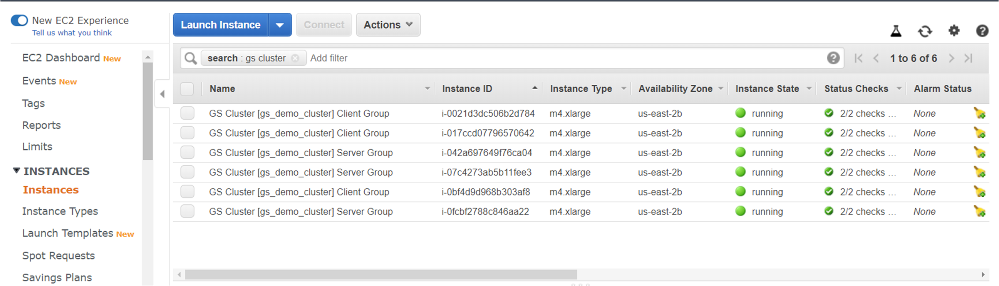
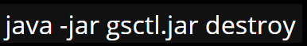

Creating a Cluster in the Cloud
This topic describes how to use the standalone CLI tool to create, provision and install clusters in the cloud. While the example described here is deployed in AWS, you can use gsctl in any cloud environment.
You will learn how to do the following:
- Create a cluster
- Deploy services in the cluster
- Undeploy the services and tear down the cluster
Prerequisites
Before beginning to work with the gsctl tool, ensure that you have the following:
-
Java 8 or higher (??) installed on your local workstation
-
Cloud account and appropriate credentials as described in the cloud platform documentation.
For example, to deploy in AWS you need the following:
- Valid AWS account
- Credentials that include
aws_access_key_id, aws_secret_access_key, and region
Downloading the Tool
The gsctl tool is available from the Github repo.
Creating a Cluster
Follow the steps in the following procedure to create a cluster and deploy the services.
-
Verify that an .AWS folder exists in the home directory on your local machine.
-
Verify that te .AWS folder contains config and credentials files with the correct configuration. For example, the credentials file should include aws_access_key_id, aws_secret_access_key, and region as mentioned above.

-
Create an empty directory and make it the current directory . In this example, the directory name is gsDemo.

Download the most current version of the gsctl.jar file (example uses wget) .
Execute the gsctl command.

the config file and .gsctl directories are created:
you can inspect the configuration file and modify as necessary.
Next, need to create the cluster. Run the following command:
The cloud platform begins to create the cluster:

You can monitor the progress of the cluster in your cloud platform dashboard, for example the VPC Dashboard in AWS:

The process of creating the cluster takes only a few minutes until the nodes are up and running:

When the cluster is up and running, you can deploy services:
make a note of the URLs for the services so you can view them via the Ops Manager.

You can also view Grafana dashboards (part of setup and deployment - commands from readme):

The setup commands include Telegraf, so you can view metrics in Grafana too:

Removing a Cluster
You can delete your cluster when you no longer need it, in order to release the cloud resources.
In the same directory where you created the
cluster, run the following command:

The cluster is taken down:

Running Products in Standalone Mode
You can start a data grid, run a Space or a Processing Unit, or start in standalone mode.
Starting a Data Grid in Demo Mode
To run a Space in demo mode, type the following command:
Command:
Description:
Runs a Space in high availability mode (2 primaries with 1 backup each).
Parameters and Options:
None.
Input Example:
Running a Standalone Space
To run a standalone Space, type the following command:
Command:
Description:
Runs a standalone Space in a stateful Processing Unit.
Parameters and Options:
| Item |
Name |
Description |
| Parameter |
name |
Name of the Space. |
| Option |
—lus |
Start a lookup service. |
| Option |
—partitions=<partitions> |
Define the number of partitions to use. |
| Option |
—ha |
Run the Space with high availability (adding a backup per partition). |
| Option |
—instances=1_1,1_2 |
Specify one or more instances to run. If no instances are specified, runs all instances. |
Input Example:
This example runs a Space named mySpace with high availability and 2 partitions. The commands start two instances for the first partition (1_1, 1_2) and two instances for the second partition (2_1, 2_2).
space run --lus --partitions=2 --ha mySpace
space run --lus --partitions=2 --ha mySpace
To run instances separately, run each of the following commands on different hosts (note that –lus is specified for discovery):
space run --lus --partitions=2 --ha --instances=1_1 mySpace
space run --partitions=2 --ha --instances=1_2 mySpace
space run --lus --partitions=2 --ha --instances=2_1 mySpace
space run --partitions=2 --ha --instances=2_2 mySpace
space run --lus --partitions=2 --ha --instances=1_1 mySpace
space run --partitions=2 --ha --instances=1_2 mySpace
space run --lus --partitions=2 --ha --instances=2_1 mySpace
space run --partitions=2 --ha --instances=2_2 mySpace
Running a Standalone Processing Unit
To run a standalone Processing Unit, run the following command:
Command:
Description:
Runs a standalone Processing Unit.
Parameters and Options:
| Item |
Name |
Description |
| Parameter |
path |
Relative/absolute path of a Processing Unit directory or archive file. |
| Option |
—lus |
Start a lookup service. |
| Option |
—partitions=<partitions> |
Define the number of partitions to use. |
| Option |
—ha |
Run the Space with high availability (adding a backup per partition). |
| Option |
—instances=1_1,1_2 |
Specify one or more instances to run. If no instances are specified, runs all instances. |
| Option |
--property=<String,String> |
Context properties. |
| Option |
--properties=<properties> |
Location of context-level properties file. |
Input Example:
This example deploys a Processing Unit that contains a Space named mySpace with high availability and 2 partitions.
pu run --lus --ha --partitions=2 myPu.jar
pu run --lus --ha --partitions=2 myPu.jar
Running in Demo Mode
To run in demo mode, type the following command:
Command:
Description:
Run Spark in standalone mode (master, worker and Apache Zeppelin), and run a Space in high availability mode (2 primaries with 1 backup each).
Parameters and Options:
None.
Input Example: